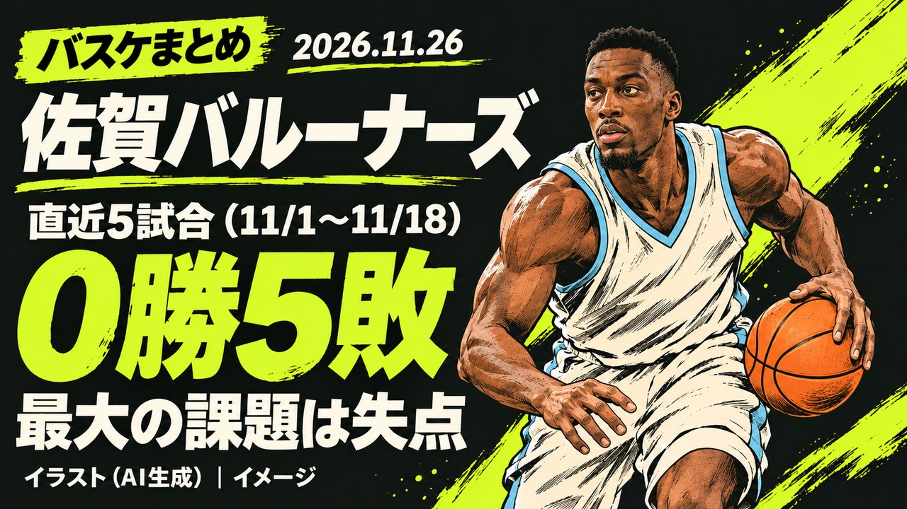

佐賀バルーナーズの直近5試合は0勝5敗 失点の多さが最大の差

佐賀バルーナーズは直近5試合を0勝5敗で終え、連敗は11になりました。B.PREMIER全26チームと比べて、差がどこで生まれたのかを数字で整理します。
結論から書くと、最大の課題は失点です。攻撃の数は平均並みですが、100回の攻撃あたりの失点は26チームで最も多くなっています。
直近5試合の結果
対象は11月1日の三河戦から、11月18日の横浜BC戦までの5試合です。シーズン成績は1勝16敗になりました。
| 日付 | 相手 | 会場 | スコア | 結果 |
|---|---|---|---|---|
| 11/1 | 三河 | アウェー | 78-84 | 負け |
| 11/8 | 千葉J | ホーム | 103-111 | 負け |
| 11/13 | 川崎 | アウェー | 72-90 | 負け |
| 11/15 | 北海道 | アウェー | 70-107 | 負け |
| 11/18 | 横浜BC | アウェー | 88-97 | 負け |
順位は26チームそれぞれの直近5試合で比べたものです。相手の強さや日程の違いは調整していません。
5試合の合計は411点を取って489点を失い、得失点差はマイナス78点です。全てのクォーターで、取った点より失った点の方が多くなっています。
100回の攻撃あたりの失点が26チームで最多
試合ごとの攻撃回数の違いをならすため、100回の攻撃あたりの得点と失点で比べます。
| 項目 | 佐賀 | 26チーム平均 | 順位 |
|---|---|---|---|
| 平均得点 | 82.2 | 85.6 | 18位 |
| 平均失点 | 97.8 | 85.8 | 25位 |
| 100回あたりの得点 | 108.8 | 113.5 | 19位 |
| 100回あたりの失点 | 129.5 | 113.6 | 26位 |
| 100回あたりの差し引き | -20.7 | -0.2 | 25位 |
平均失点の25位は、失点が多い方から2番目という意味です。
1試合の攻撃回数は75.5回で、平均と同じ水準です。攻撃は平均より4.7点低く、守備は平均より15.8点多く失っています。
どちらも下位ですが、差の大部分は守備側にあります。
相手に決められているのは3Pと2Pの両方
相手のeFG%は60.5%で、26チームで最も高い数字です。平均は53.8%でした。
eFG%は、3Pを1.5倍で数えたシュート成功率です。
| 5試合のシュート | 佐賀 | 相手 |
|---|---|---|
| 3P | 57本成功／162本中（35.2%） | 69本成功／161本中（42.9%） |
| 2P | 80本成功／169本中（47.3%） | 113本成功／197本中（57.4%） |
3Pの試投数はほぼ同じです。それでも相手は12本多く決めました。
相手の3P成功率は、26チームで高い方から2番目です。
2Pは差がさらに大きく、相手は佐賀より33本多く決めています。
ペイント内の失点も1試合平均41.6点で、多い方から6番目です。
佐賀自身のペイント内の得点は28.8点で、26チームで最も少なくなっています。平均は36.3点でした。
得点差の内訳は2Pと3Pで開き、フリースローは勝っている
マイナス78点を、シュートの種類ごとに分けました。
| 種類 | 佐賀 | 相手 | 差 |
|---|---|---|---|
| 2P | 160点 | 226点 | -66点 |
| 3P | 171点 | 207点 | -36点 |
| フリースロー | 80点 | 56点 | +24点 |
| 合計 | 411点 | 489点 | -78点 |
フリースローだけは、24点上回っています。
佐賀は113本を打って80本を決めました。相手の試投は72本です。
相手に与えるフリースローは1試合平均14.4本です。26チームで少ない方から2番目で、ファウルで止める守りは崩れていません。
つまり、通常のシュートを打たれた時に止められていません。
ターンオーバーは少なく、リバウンドと速攻で押される
ターンオーバーで終わった攻撃の割合は13.4%で、少ない方から12番目です。平均の14.0%よりわずかに良い数字です。
押されているのはリバウンドと速攻です。
相手のオフェンスリバウンド獲得率は37.5%で、多い方から3番目でした。平均は32.4%です。
相手の速攻の得点は1試合平均14.6点で、多い方から6番目です。相手のセカンドチャンスの得点も15.2点あり、同じく多い方から6番目になりました。
前半も後半も、1試合あたり7点以上のマイナス
前半と後半で、1試合あたりの得点と失点を比べました。
| 1試合平均 | 得点 | 失点 | 差 |
|---|---|---|---|
| 前半 | 41.0 | 49.4 | -8.4 |
| 後半 | 41.2 | 48.4 | -7.2 |
前半に離され、後半も取り返せていない形です。5試合の合計は、前半がマイナス42点で後半がマイナス36点です。
リトル選手に頼る攻撃
ナシール・リトル選手は、5試合で平均31.0得点を記録しました。8.4リバウンドと4.2アシストも、出場時間は平均35.6分です。
フリースローは50本中38本を決めています。チーム全体で決めた80本のうち、この1人が38本を占めています。
角田太輝選手は平均14.0得点と4.6アシストで、3Pは38本中14本でした。
チームのアシストは1試合平均17.4本で、26チームの25位です。平均は21.4本でした。
内尾選手の負傷とオリビエ選手の退団
クラブは11月11日、内尾聡理選手が11月8日の千葉戦で負傷したと発表しました。診断名は左肘関節脱臼で、全治は4か月です。
11月19日には、クリストファー・オリビエ選手の退団が発表されました。B.LEAGUE自由交渉選手リストにも公示されています。
オリビエ選手は、この5試合に全て出場して平均11.6得点を記録しています。オフェンスリバウンドは5試合で11本です。
デイビッド・ダジンスキー選手とデイミアン・ドットソン選手は、5試合のどれにも出場していません。理由は確認できませんでした。
次の富山戦で見たいところ
次の試合は12月4日19時5分から、ホームでの富山戦です。
数字の上で見たいところは、次の3つです。
- 100回の攻撃あたりの失点が下がるか
- 相手の3Pと2Pの成功率を抑えられるか
- ペイント内の得点が増えるか